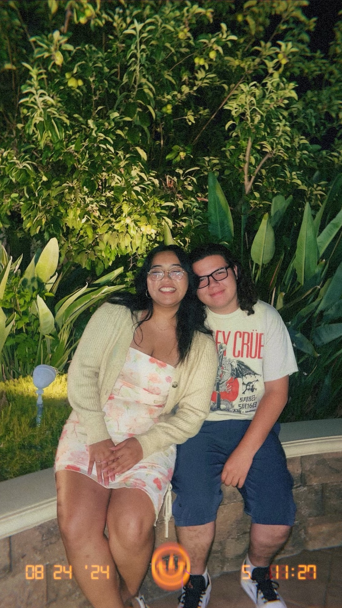

Emily's Homepage
Hello!!

About Me
Im a sophmore at UCSC, Im in the Folklorico club Los Mejicas! I have 2 dogs, Max and Simba, and 6 birds, Jyn, Rey, Itzel, Isha, Muffin, and Tequila.
Hello!!
Im a sophmore at UCSC, Im in the Folklorico club Los Mejicas! I have 2 dogs, Max and Simba, and 6 birds, Jyn, Rey, Itzel, Isha, Muffin, and Tequila.